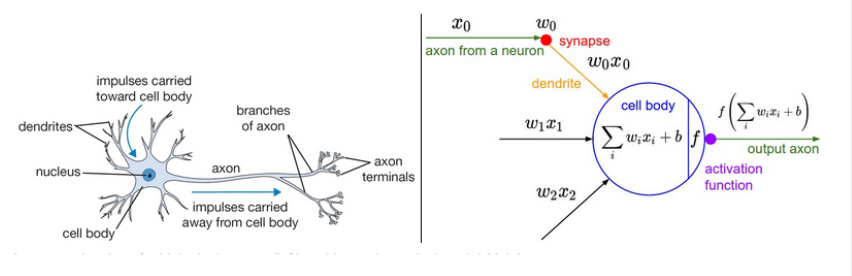
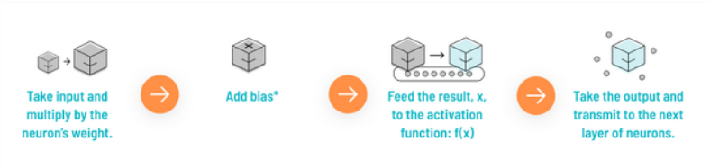
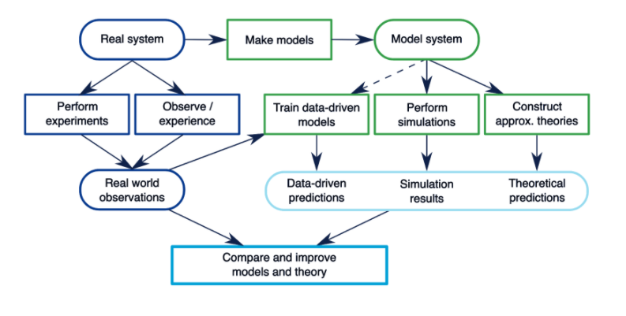
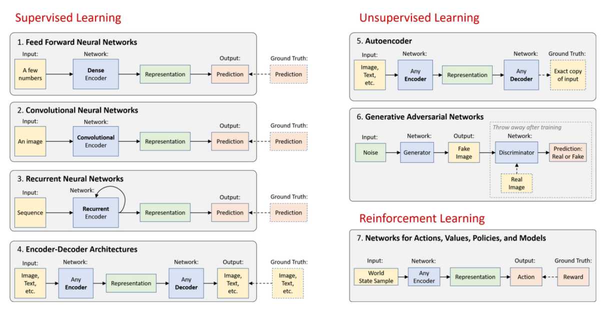
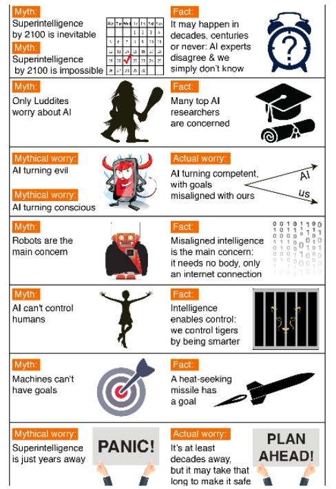

Week Fourteen Apr 29, May 1, 3 Artificial Intelligence, Neuroscience and Consciousness
Monday: Artificial Intelligence and Neuroscience
Wednesday: Deep Neural Nets with Keras/TensorFlow
Friday: Artificial General Intelligence: Promises and Perils
(Optional) Current Events:
- The Bearer of Good Coronavirus News, Allysia Finley, WSJ, 24 Apr 2020
- What if Covid-19 Isn't Our Biggest Threat, Andrew Anthony, TheGuardian.com, 26 Apr 2020
In this, our final week, we look at what some speculate may be humankind's 'last great invention': Artificial Intelligence (AI). We'll also see how AI has rapidly grown to be a central focus in academia, industry and national as well as international politics. This week also completes our weeks of investigating the intersection between the hottest technologies and humankind's biggest threats and opportunities.
We'll review the history of AI, measure the accelerating pace of innovation, and see some promising new directions in AI research. Deep Neural Networks (DNNs) are introduced and parallels drawn between both simple and complex models of human neurophysiology. We'll explore original inspirations from neuroscience as well as the growing cross-pollination between the the two fields. After 60 yrs of divergence, we're once again seeing a synthesis of approaches and discoveries between AI and neuroscience, the only model of intelligence we know of in the universe.
This week also previews two intermediate courses that follow our in our Digital Humanities sequence, both of which employ AI/ML. IPHS 275 Machine Reading is a hands-on workshop of NLP concepts and teaches you the practical application of textual analysis across everything from political speeches to tweets, tv scripts to novels. IPHS 300 explores AI and Deep Neural Nets in particular, with an emphasis on techniques to understand and generate text, images and music.
This week's foundation also prepares us for our discussion. We'll consider AI safety and FATE (Fairness, Accuracy, Transparency, and Ethics), and even venture into the philosophical and speculative with glimpses into the nature of art and creativity, consciousness, brain uploads and safeguarding humanity from AI.
We wish our seniors a virtual farewell and encourage you to stay in touch and to send us feedback as to how well we've prepared you for life after Kenyon.
We hope to see the rest of you in future classes or around campus.
Monday:
- Google's AI is Beating Humanity at it's Own Game (2:07) Vice HBO, Sep 2017
- The Rise of AI (0:00-13:00) Bloomberg, Jun 2018
- Existential Risk: Managing Extreme Technological Risk (13:01) Center for the Study of Existential Risk Cambridge, Nov 2017
- Neurosymbolic AI (0:00-25:00) MIT, Mar 2020
- AI - Neurons, Perceptrons and Neural Networks (2:53) Pearl Grey, Dec 2013
- But What *is* a Neural Network? (19:00) 3Blue1Brown, Oct 2017
- How Deep Networks Work (only 0-13:00) Brandon Rohrer, Mar 2017
- Monday Lecture #1 AI
Wednesday:
- Turing Test: Can Machines Think? (only 0:00-31:50) Lex Freidman, Apr 2020
- MIT Deep Learning Basics: Introduction and Overview with TensorFlow Lex Fridman, Feb 2019
- Neuroscience and AI Need Each Other (22:42) Marvin Chun, TEDxKFAS, Oct 2018
- In Defense of the Black Box, Elizabeth Holm, Science, Apr 2019
- What Happens When Our Computers Become Smarter than We Are? (16:13) Nick Bostrom, TED, Apr 2015
- A brief sampling of new Interdisciplinary AI/ML Centers:
- Introducing the Stanford Institute for Human-Centered AI (4:26) Stanford University, Mar 2019
- Introducing a New Institute for AI Ethics (2:05) University of Oxford, Jun 2019
- MIT Reshapes Itself for the Future (2:57) MIT, Oct 2018
- Center for Brains, Minds + Machines (website) NSF Multi-Institution including Harvard, MIT, John Hopkins, Rockefeller University, Stanford, Wellesley College, etc. ("We aim to create a new field — the Science and Engineering of Intelligence — by bringing together computer scientists, cognitive scientists, and neuroscientists to work in close collaboration. This new field is dedicated to developing a computationally based understanding of human intelligence and establishing an engineering practice based on that understanding.")
- Wednesday Lecture #2 AI
Thursday:
- Artificial Intelligence Quiz (Thurs 11am EST - Fri 11am EST)
Friday:
- Consciousness with Christof Koch, MIT AI with Lex Fridman (0:00-34:00, 40:00-55:00) May 2018
- Ethics Guidelines for Trustworthy AI, EU, Apr 2019
- Fei-Fei & Yuval Noah Harari in Conversation (AI, Biology and Hacking Humanity) (8:08-30:00) Stanford University Human-Centered AI Institute (Founded 2019)
- Why the Race for AI Dominance is More Global Than You Think, Kathleen Walch, Forbes, 9 Feb 2020
- How Close Are We To Downloading the Human Brain (7:08) Seeker, Sep 2018
Quiz Topics:
- Two questions about the ‘secret words’ embedded within Monday and Wednesday lectures for attendance credit
- Questions about the figures below
- Questions about the readings/videos this week







